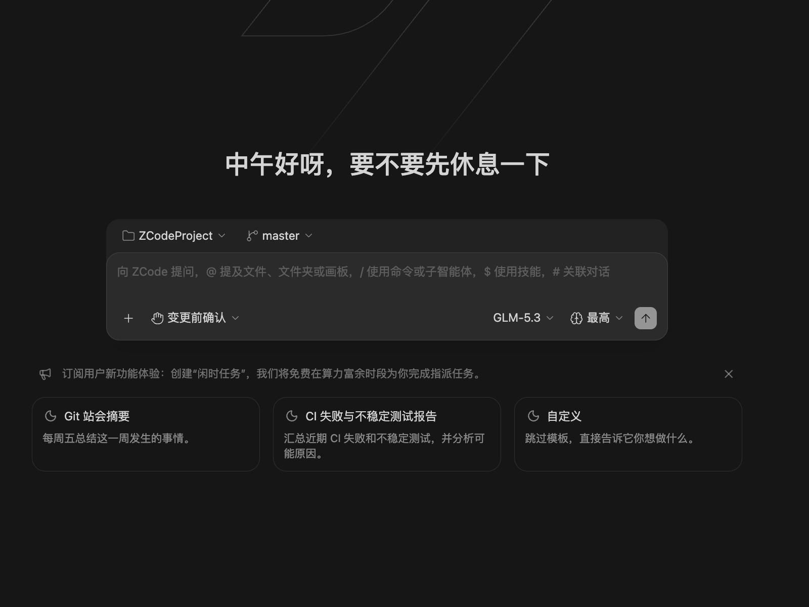

开始使用
欢迎使用 Drora
Drora 是一个把 GLM-5.3 带入真实编程工作流的 Agentic Development Environment (ADE)，帮助你把 GLM-5.3 的长上下文、长程任务与 Agentic 编程能力，转化为稳定可用的桌面体验，覆盖复杂开发任务中的规划、编码、审查与迭代。
依托 GLM-5.3 稳定的 1M 上下文与长程任务能力，Drora Agent 可以把目标、文件、终端结果、浏览器上下文、执行模式和 Git 状态保持在同一个任务里，让复杂开发任务从规划一路推进到实现与验证收口，而不丢失连续性。
Drora 聚焦 Agent 能力：模型、工具和执行工作流结合更紧密，让复杂开发任务可以在同一个上下文里从规划一路推进到验证收口。
Drora 基于上游 ZCode 开源复刻并持续跟进，由社区维护。功能范围、维护规则与许可说明见 NOTICE.md。
通过自然语言指令，你可以让 Drora Agent 处理编码、调试、测试、项目预览和变更审查等工作；通过桌面端工作区与手机端 Remote，也可以在长任务执行中持续查看进度并补充指令。
核心能力
Drora 围绕 Drora Agent 组织开发体验，并针对 GLM-5.3 系列模型做了深度适配，重点强化以下能力：
- GLM-5.3 深度联调：围绕模型能力、工具调用和执行链路进行多轮打磨，让 Agent 更适合连续、多步骤的真实开发任务。
- 长任务执行：在同一个任务里完成需求理解、计划拆解、代码修改、验证和 Review，减少频繁切换上下文带来的中断。
- 稳定上下文保持：结合 GLM-5.3 的长上下文能力，持续读取文件、终端、浏览器、执行模式和 Git 状态，提升长程任务的持续推理能力。
- Agent 工作流：任务、权限、上下文、工具调用和提交流都围绕 Drora Agent 组织，模型输出可以更自然地落到实际工程操作中。
- 多端持续跟进：桌面端与手机端 Remote 可以共同推进同一个工作区任务。
- 安全可控：关键命令、文件修改和高权限操作会在执行前进入确认流程。
GLM-5.3 与套餐
借助 GLM-5.3 的长上下文，Drora 能在一个任务里持续跟进更多文件和更长的开发过程。它会结合当前工作区、工具执行结果和 Git 变更继续推进，即使任务跨越多个步骤，也不用反复补充背景。
「闲时任务」可以把不着急的工作交给队列，Drora 在算力富余时段完成，定时任务则按计划自动触发，详见 自动化任务。
Drora 本身不销售任何套餐：GLM Coding Plan 等编程套餐的档位与额度以 Z.ai / BigModel 订阅页为准，登录账号后即可在 Drora 中直接使用。
- 连接 GLM Coding Plan：绑定 BigModel 或 Z.ai 账号，使用 GLM-5.3、GLM-5.3-Flash 等内置模型。
- 查看编程套餐用量：在使用统计中查看 Coding Plan 额度、模型消耗和工具调用。
快速开始
功能一览
- 安装——下载桌面安装包或 CLI 单文件，处理首次运行的签名提示。
- 连接模型——登录 GLM 账号或接入自建端点。
- Drora Agent——新建任务的主入口：@、#、/、$ 补充上下文，执行模式与推理强度可调。
- 任务与目标模式——用 Goal 承载长程目标，进度逐步打勾。
- 任务与文件管理——分组、项目与时间线组织任务，文件树里引用变更文件。
- Memory 记忆——跨会话沉淀项目记忆（CLI 默认开启，桌面默认关闭）。
- 会话与编辑历史——回放历史、检查点回退与恢复中断任务。
- 手机远控——手机浏览器直连桌面已有 Host，断线可恢复回放。
- 远程开发——连接 SSH/WSL 远程工作区开发。
- 使用统计——按会话查看 token 消耗与工具调用分布。
- 安全操作确认——权限模式与逐次确认，执行前看清每一步。
- 智能体开发环境工具——命令中心、文件预览与终端面板一体的开发环境。
- 技能与斜杠命令、MCP 与插件——按需扩展 Agent 能力面。
- 子智能体——并行委派探索与检索，只把结论带回主对话。
- Hooks——在会话与工具生命周期关键点注入脚本。
- 自动化任务——定时任务与闲时任务，计划内自动执行。
- 桌面宠物——三只猫娘实时呈现任务状态，可拖动可隐藏。
- 皮肤中心——内置插画壁纸，面板透明度与主题色自定义。
- 命令行 CLI——drora 单文件可执行：TUI、Web 模式与脚本化运行。
- 从源码构建——pnpm bootstrap 起步的源码开发与打包。
- 常见问题——安装、更新与常见问题排查。
加入社群
使用问题与交流建议欢迎到 社区页 ：飞书社群、Discord 与 GitHub Discussions 都能到达维护者；安全问题请走 提交漏洞渠道。
